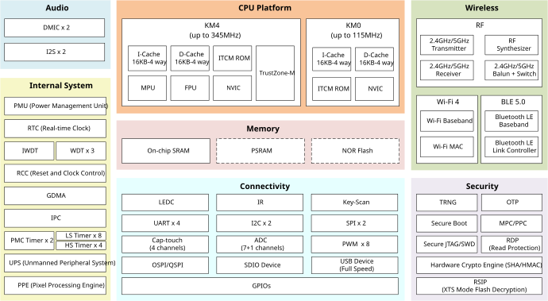

Introduction
The RTL8721Dx is a low-power dual-band microcontroller integrating a high-performance MCU (Armv8.1-M, Cortex-M55 instruction set compatible) called Real-M300 and a low-power MCU (Armv8-M, Cortex-M23 instruction set compatible) called Real-M200. It is designed to achieve enhanced power and RF performance and low-power consumption, featuring all the characteristics of low-power chips, such as fine-grained clock gating, multiple power modes, and dynamic power scaling.
The Real-M300 (or KM4 thereafter), acting as application processor (AP), is a 3-staged pipelined 32-bit high-performance processor that bases on Armv8.1-M mainline architecture supporting Arm Cortex-M55 instruction set compatible, running at a frequency of up to 345MHz. It offers system enhancements such as enhanced debug features, floating-point computation, Digital Signal Processing (DSP) extension instructions, and a high level of support block integration for high-performance, deeply embedded applications. The TrustZone-M security technology provides hardware-enforced isolation between the Trusted and Non-Trusted resources on the devices, while maintaining efficient exception handling and determinism.
The Real-M200 (or KM0 thereafter), acting as network processor (NP), is a 2-staged pipelined 32-bit low-power processor that bases on Armv8-M baseline architecture supporting Cortex-M23 instruction set compatible, running at a frequency of up to 115MHz. It is an energy-efficient and easy-to-use processor with a simple instruction set and reduced code size, and is code- and tool-compatible with the KM4 processor. It is intended for operations requiring fast response and low power consumption features, such as power management and network protocol processing.
The RTL8721Dx is a dual-band (2.4GHz and 5GHz) communication controller that integrates the specifications of Wi-Fi (Wi-Fi 4) and Bluetooth (BLE 5.0). It supports 802.11 a/b/g/n wireless LAN (WLAN) network with 40MHz bandwidth. It consists of WLAN MAC, a 1T1R capable WLAN baseband, RF, and Bluetooth, providing complete Wi-Fi and Bluetooth functionalities.
A variety of peripheral interfaces, including UART, SPI, QSPI/OSPI, I2C, LEDC, etc., as well as sensor controllers (such as ADC, Cap-Touch, and Key-Scan) are integrated into RTL8721Dx devices. High-speed connectivity interfaces, SDIO and USB, are also provided. Besides, the RTL8721Dx has audio features with a dedicated digital microphone (DMIC) interface and I2S. Abundant general-purpose I/O (GPIOs) can be configured to different functions according to different IoT (Internet of Things) applications flexibly. The user-friendly development kits (SDK and HDK) are provided to customers for developing applications.
The RTL8721Dx also incorporates high-speed memories with on-chip SRAM and stacked Flash or PSRAM. A dedicated SPI Flash controller provides a flexible and efficient way to access NOR Flash (e.g., byte and block access). A multilayer AXI bus interconnect supports internal and external memory access.
The RTL8721Dx family offers devices in different packages ranging from 48 pins to 100 pins. The included peripherals change with the device.
Block Diagram
The functional block diagram is illustrated below, which provides a view of the chip’s major functional components and core complexes.
{kind=link}

Block diagram
Note
For different part numbers of RTL8721Dx series, refer to Products for more details.